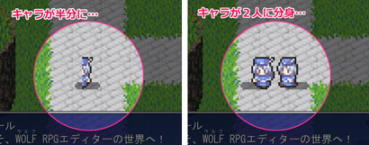
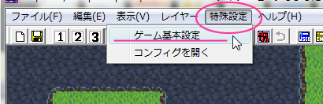
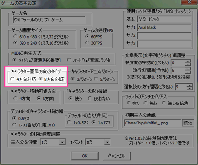
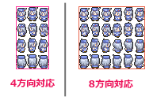

【目標】
キャラが正しく表示されるように設定を変更します。
キャラが半分に表示されている…
キャラが2キャラに分身して表示されている…
というのは、こんな感じに表示されてしまっている状態のこと。

|
【1】 ・エディタの上部、メニューバーから「特殊設定」をクリックします。 ・「ゲーム基本設定」をクリックします。  |
|
【2】 「ゲームの基本設定」ウィンドウが表示されます。 このウィンドウでは各種の設定ができますが、 今注目すべきは紫で囲った一か所のみです。 「キャラクター画像方向のタイプ」の設定欄で、 「4方向対応」と「8方向対応」のどちらかを選択します。 この設定と用意したキャラクター画像が違う場合に キャラが半分になったり分身したりする現象が生じます。 詳しくは後の方で説明しますので、 今はとりあえず設定を変更してみましょう。 ■ 現在「8方向対応」になっている方は 「4方向対応」に切り替えてください。 （↑おそらく、半分に表示されている。） ■ 現在「4方向対応」になっている方は 「8方向対応」に切り替えてください。 （↑おそらく、2キャラに分身して表示されている。） 変更したら下の「ＯＫ」ボタンをクリックします。 やるべきことは、これだけです。 |
 |
|
【3】 テストプレイで確認してみましょう。 正しく表示されたでしょうか？ ※ それでも正しく表示されない！という方は、本稿の下の方 「【余談２】アニメパターン」や「【余談３】特殊機能の影響」もご確認を。 以上です。お疲れ様でした。 以下にもう少しばかり詳しい説明を付記しますので 気になる方はそちらもご確認ください。 |
|
【余談１】 詳しい説明 ウディタはキャラクターの画像（キャラチップという）の規格について、 「4方向対応」と「8方向対応」、の二つの方式から選ぶことができます。 「4方向対応」とは、上・下・左・右の4方向を向いた絵が用意されている画像で、 「8方向対応」とは、4方向に加え、右上・右下・左上・左下を向いた絵が用意されている画像です。  ツクール規格のキャラチップ（First Seed Material様方の素材など）は 「4方向対応」のキャラチップです。上下左右の4方向を向いた絵しかありません。 残念なことに「8方向対応」のキャラチップ素材は、ネット上にあまり多く出回っていません。 さて、半分に表示されたり、分身が表示される原因についてですが… ウディタはキャラを表示する際、1つの画像を分割して表示しているのはお分かりだと思います。 その時の分割数は、素材のサイズごとに決まるのではなく、 「画像の方向タイプ」と「アニメパターン」の設定によって決まっています。 ウディタ側の設定が「4方向対応」だと、画像を横方向に3分割します。 「8方向対応」だと、倍の6分割です。（※いずれもアニメパターンが3パターンの場合） 「4方向対応」のグラフィックは本来ならば3分割されるべきなのですが、 設定が「8方向対応」になっているので、6分割されてしまい、 本来表示されるべき画像の半分が表示されてしまったのです。 2キャラに分身する場合も同様で、6分割して表示されるべき画像が、 3分割で表示されるために、2キャラが表示されてしまっていた、というわけでした。 （※ 3分割、6分割と書きましたが、アニメパターンが5パターンの場合は5分割10分割になります。） なお、「4方向対応」と「8方向対応」の画像を一つのゲームで両方とも使うことはできません。 どちらかに統一するようにしましょう。 |
|
【余談２】 アニメパターン 上記方法で解消しなかった方は、「アニメパターン」の設定が間違っているのかもしれません。 ウディタはキャラのアニメーションのしかたも選ぶことができます。 「3パターン」と「5パターン」の2種類があります。 「3パターン」よりも「5パターン」の方がより滑らかなアニメーションですが、 5パターンの素材は少ないようです。 さて、この「キャラクターアニメパターン」の設定が間違っていると、 半分ともつかない、中途半端に切れた画像が表示されてしまいます。 もしもそのような状態になっているのであれば、 本稿の手順と同じように、「特殊設定」→「ゲーム基本設定」を選択し、 「ゲームの基本設定」ウィンドウの、「キャラクターアニメパターン」の設定欄を見つけ、 設定を用意した素材に合わせて正しく変更してください。 |
|
それでも直らない！という方… 【余談３】 特殊機能の影響 キャラチップのファイル名を確認して下さい。 末尾が「T.png」や「TX.png」となっていませんか？ （［ RAT.png ］など ） ファイル名の末尾が［T.png］や［TX.png］である場合には特殊機能が作用し、画像の分割数がかわります。 知らずに上記のようなファイル名を付けてしまうと、正しく表示されないのです。 この場合は、ファイル名を変更すれば解決します。 めったにないでしょうが、念のために付記しておきます。 |
＜執筆者：ミケ＞